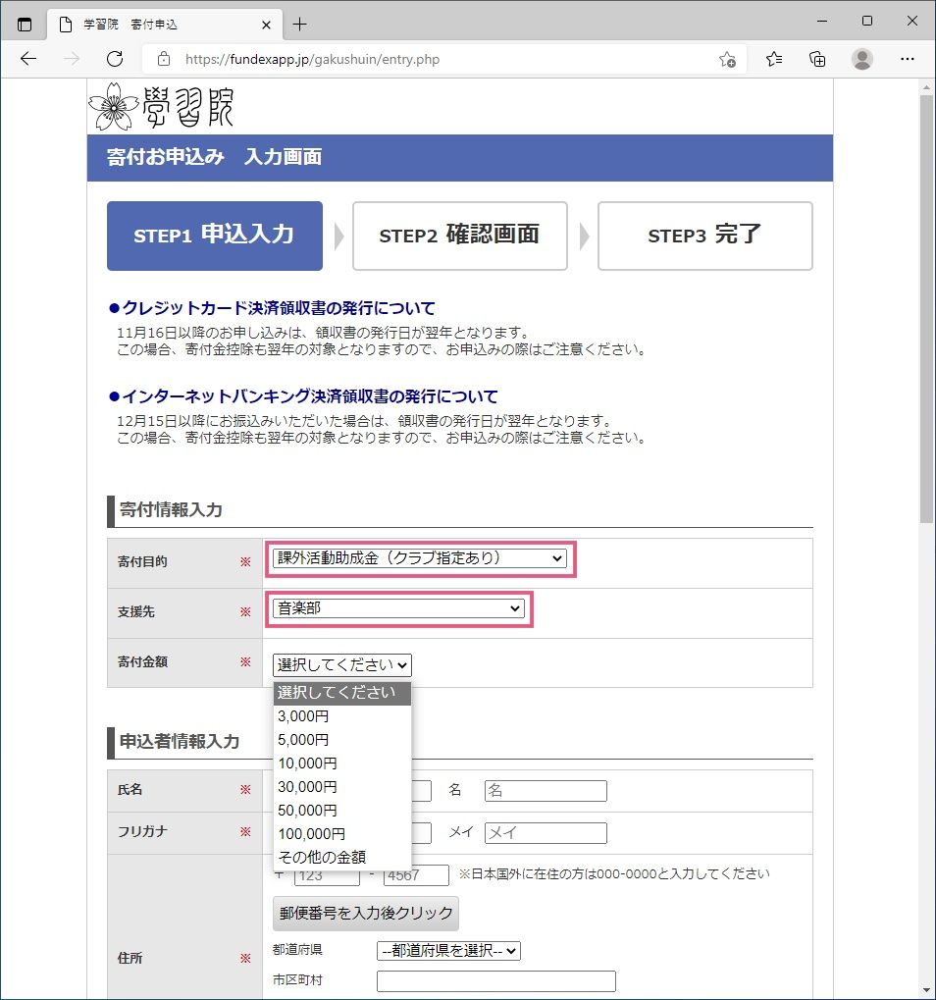

創部100周年記念 第49回卒業演奏会に向けた活動へのご支援のお願い
2021年12月15日発表
2022年1月16日更新
寄付金の受付は終了いたしました。たくさんのご支援をありがとうございました。
平素より学習院輔仁会音楽部の活動にご理解、ご協力を賜りまして誠にありがとうございます。
この度当部は2022年3月5日に学習院創立百周年記念会館にて、「創部100周年記念 第49回卒業演奏会」を開催いたします。
それにあたりまして、皆様にご寄付のお願いを申し上げます。
当部は新型コロナウイルス感染症の影響を受け、昨年3月より対面活動を自粛しておりましたが、昨年11月に管弦楽団「特別演奏会2020」を契機として対面活動を再開し、以来感染防止に最大限の注意を払いつつ活動を続けて参りました。
しかし、学習院大学の感染予防措置により、依然として練習の学内の施設利用には大きな制約が生じております。そのため、多くの練習を外部の施設で実施せざるを得ない状況が続いております。外部施設での練習には施設の利用費、大型楽器のレンタル・運搬費など莫大な費用が生じ、部員による部費および演奏会費を中心とした財政は逼迫しております。更に、施設の予約費や交通費など、個人の負担が増大している状態も続いております。
結果として、新型コロナウイルス感染症流行以前に比較し練習回数は大幅に減少しております。
当部は2022年に創部100周年を迎えます。「創部100周年記念 第49回卒業演奏会」はその記念すべき年度最初の主催公演となります。演奏会を通じ、この団体が持つ歴史・一員となることで得られる代えがたい経験を将来に繋ぎ、皆様により良い音楽をお伝えするため、試行錯誤しながら全力で準備を進めて参ります。そのためには皆様のご支援が大変大きな力となります。
どうか皆様のご支援を心よりお願い申し上げます。
創部100周年記念 第49回卒業演奏会
| 日付 | 2022年3月5日（土） |
| 時間 | 開演14:00 |
| 会場 | 学習院創立百周年記念会館 正堂 |
| 指揮 | 学生指揮者 |
| 曲目 | 信長貴富／混声合唱とピアノのための「初心のうた」より「自由さのため」 マーラー／交響曲第1番「巨人」第4楽章 信長貴富／リフレイン（合同演奏） ほか |
詳細は演奏会情報ページをご覧ください。
寄付金募集要項
学校法人学習院による課外活動助成金の仕組みを活用いたします。
「大学音楽部」にご寄付いただく形となりますが、大学・女子大学音楽部が合同で行う活動のために使用いたします。
| 使用目的* | 外部施設使用費 楽器レンタル費、楽器運搬費 その他新型コロナウイルス感染症対策費 |
| 目標金額 | 100万円 |
| 期間** | 2021年12月15日（水）から 2022年1月15日（土）まで |
* 残余が生じた場合、他の主催公演において生じる上記費用に使用させていただきます。
** 上記期間外もご寄付を受け付けております。いただいた寄付金は音楽部の活動費として大切に使用させていただきます。お振り込み方法
- こちらより学校法人学習院へのご寄付のお申込み画面にアクセスしてください。
- 「寄付目的」に「課外活動助成金（クラブ指定あり）」を指定し、続けて「支援先」に「大学—音楽部」を指定してください。
- 「寄付金額」「申込者情報」を入力し、誘導に従って手続きをお願いいたします。
税制上の優遇
ご寄付は税制上の優遇措置（寄付金控除）を受けることができます。
詳しくは学校法人学習院公式Webサイトをご確認ください。
寄付金振込用紙によるお振り込み
インターネットからのお振り込みが難しい方に限り、専用の「寄付金振込用紙」によるお振り込みが可能です。音楽部より郵送させていただきますので、お問い合わせください。
本件に関するお問い合わせ：お問い合わせフォームより
2021年12月15日（水）
学習院輔仁会音楽部
- 新型コロナウイルス感染症（COVID-19）への対応についてはこちらをご覧ください。